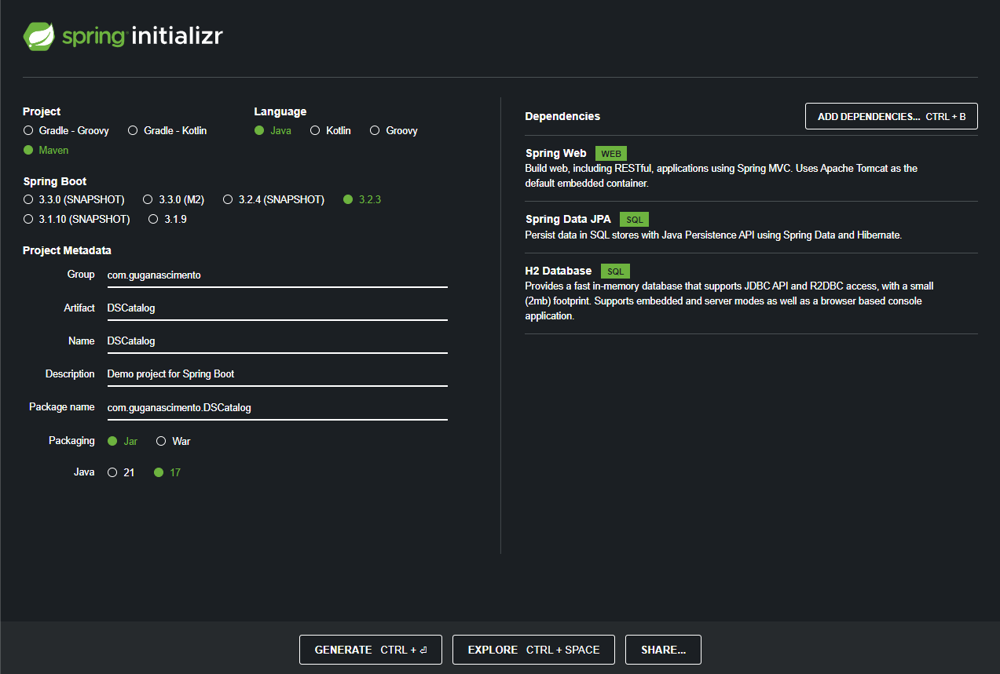

Criando o projeto
Acessando o Spring Initializr
Após acessar o site do Spring Initializr, segue a imagem de configuração que pode mudar dependendo do seu projeto, 
Após gerar o projeto você recebera um download do arquivo que você precisa descompactar na pasta de sua preferência,
a seguir abra a pasta na sua IDEA.
Com o projeto baixado abra o arquivo pom.xml e adicione a dependência: